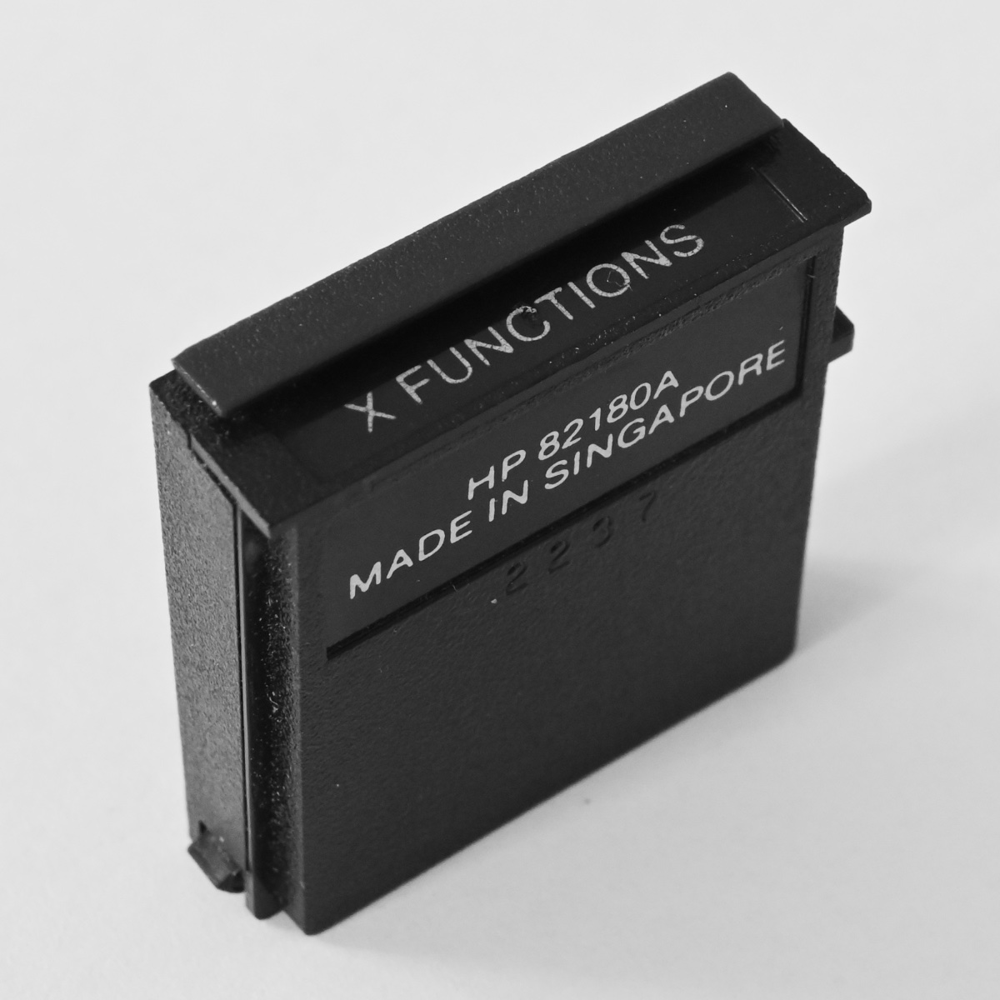

While the HP 82180A Extended Functions/Memory Module is plugged into
the calculator, the following functions are available for your use. This
module also provides you with 127 registers of extended memory and
enables you to utilize one or two HP82l81A Extended Memory Modules to
increase the size of extended memory.
| ALENG |
Returns the length of the string in the ALPHA register to the
X-register. |
| ANUM |
Searches the ALPHA register for an ALPHA-formatted number and
returns the numerical value to the X-register. (The X-register is
unaffected if there is no number in the ALPHA register.) |
| AROT |
Rotates the contents of the ALPHA register by the number of
characters indicated by the number in the X-register. Rotates left
for positive numbers, right for negative. |
| ATOX |
Moves leftmost character out of the ALPHA register and places its
character code in the X-register. (Refer to back page, Displayable
Characters and Their Corresponding Codes.) |
| CLKEYS |
Clears all key assignments. |
| GETKEY |
Halts program execution until either a key is pressed or
approximately 10 seconds elapse. Puts keycode in X-register if key is
pressed; puts zero in X-register if no key is pressed within the time
period. |
| PASN |
Assigns function or program name to specified key. Requires
function or program name in the ALPHA register, keycode in the
X-register. |
| PCLPS |
Clears program named in the ALPHA register (or current program if
the ALPHA register is empty) and all programs that follow. |
| POSA |
Scans the ALPHA register for the character or characters in the
X- register. If the X-register contains a numeric character code, a
single character is searched for. If the X-register contains ALPHA
data, that string is searched for. Returns position of first
character to the X-register, or -1 if no match is found. (Refer to
back page, Displayable Characters and Their Corresponding
Codes.) |
| PSIZE |
Allocates registers to data storage. Requires number of data
registers in the X-register. |
| RCLFLAG |
Recalls data representing the status of flags 00 through 43 to
the X-register. |
| REGMOVE |
Copies nnn main memory registers in block starting at
register sss to block starting at register ddd.
Requires index in form sss.dddnnn in X-register. |
| REGSWAP |
Swaps nnn main memory registers beginning at register
sss with nnn registers beginning at register
ddd. Requires index in form sss.dddnnn in
X-register. |
| STOFLAG |
Uses data in X-register from RCLFLAG to
restore flags 00 through 43, or the flag data in Y-register to
restore a block of flags specified by a number in the form
bb.ee in the X-register. |
| X<>F |
Exchanges the contents of the X-register with the status of flags
0-7. |
| XTOA |
Converts the character code in the X-register to the
corresponding character and appends the character to the ALPHA
register. (Refer to back page, Displayable Characters and Their
Corresponding Codes.) |
| APPCHR |
Appends contents of the ALPHA register at the end of the current
record in the working ASCII file. |
| APPREC |
Appends contents of the ALPHA register to the working ASCII file
as a new record. |
| ARCLREC |
Appends a record or portion of a record from the working file to
the contents of the ALPHA register. Stops when the ALPHA register is
full or when the end of the record is reached. |
| CRFL |
Clears a data file or ASCII file. Requires file name in the ALPHA
register. |
| CRFLAS |
Creates an ASCII file. Requires file name in the ALPHA register
and file length (registers) in the X-register. |
| CRFLD |
Creates a data file. Requires file name in the ALPHA register and
file length in the X-register. |
| DELCHR |
Deletes the number of characters indicated by the X-register from
the current record, starting from the character pointer. |
| DELREC |
Deletes the current record in the working ASCII file. |
| EMDIR |
Displays a list of the files in extended memory and returns the
number of registers that remain unused. |
| FLSIZE |
Returns the number of registers in a file. Requires file name in
the ALPHA register. |
| GETAS |
Copies an ASCII file from an HP-IL mass storage device to
extended memory. Requires the source file name and (if different) the
destination file name, in the ALPHA register. |
| GETP |
Replaces the last program in main memory with the contents of the
program file named in the ALPHA register. |
| GETR |
Copies an entire data file into main memory, beginning with
register 00. Requires file name in the ALPHA register. |
| GETREC |
Clears the ALPHA register and copies up to 24 characters from the
current record in the working ASCII file to the ALPHA register. |
| GETRX |
Copies registers from the working data file to a block of main
memory specified by a number in the form bbb.eeein the
X-register. |
| GETSUB |
Copies the program file named in the ALPHA register to the end of
program storage in main memory. |
| GETX |
Copies the current register in the working data file to the
X-register. |
| INSCHR |
Inserts the contents of the ALPHA register into the current
record ahead of the current character position. |
| INSREC |
Inserts the contents of the ALPHA register ahead of the current
record as a new record. |
| POSFL |
Scans the working ASCII file for a match with the string in the
ALPHA register. Returns pointer index (rrr.eee) to the
X-register if a match is found, -1 if no match is found. |
| PURFL |
Purges the file named in the ALPHA register. |
| RCLPT |
Recalls the pointer index from the working file to the
X-register. The pointer index is in the form rrr (register
number) for data files, rrr.ccc (record number and character
position) for ASCII files, or bbbb (number of bytes) for
length of program file. |
| RCLPTA |
Recalls the pointer index or length of program from the file
named in the ALPHA register to the X-register. |
| SAVEAS |
Copies an ASCII file from extended memory to an HP-IL mass
storage device. Requires the source file name and (if different) the
destination file name in the ALPHA register. |
| SAVEP |
Copies the program named in the ALPHA register to extended
memory. |
| SAVER |
Copies all the data registers in main memory to the data file
named in the ALPHA register. |
| SAVERX |
Copies the block of main memory data registers specified by the
number in the X-register (bbb.eee) to the working data file,
starting at the current pointer position. |
| SAVEX |
Copies the contents of the X-register to the working file at the
current pointer position. |
| SEEKPT |
Positions the pointer or pointers in the working file using an
index number in the X-register. Requires index in the form rrr
(register number) for data files or rrr.ccc (record number and
character position) for ASCII files. |
| SEEKPTA |
Positions the pointer or pointers in the file named In the ALPHA
register using an index number in the X-register. Requires index in
the form rrr (register number) for data files or
rrr.ccc (record number and character position) for ASCII
files. |